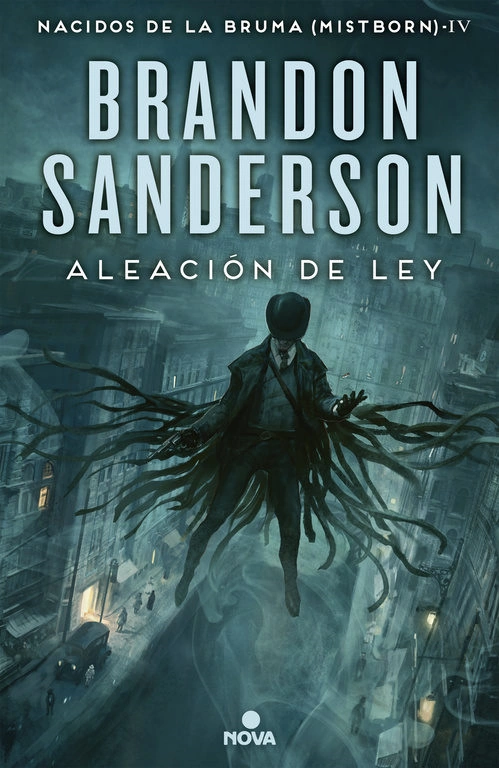
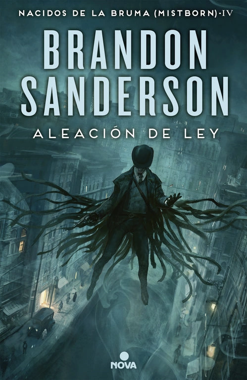

Nacidos de la Bruma
- El Archivo de las Tormentas
- Arena Blanca
- Standalones
Se trata de un universo ficticio compartido a lo largo de muchas de las obras de Brandon Sanderson.
Si bien la mayoria de sus libros/sagas pueden ser leidos de forma individual, se recomienda seguir un orden de lectura particular para no perder ningun detalle o pequeño hilo de la gran historia que engloba todo el resto.
Con inicios en Elantris en 2005, cuenta actualmente con dos sagas principales, ademas de varios standalones los cuales podrían convertirse en sus propias sagas en el futuro, y una saga de novelas graficas titulada "Arena Blanca".
Nacidos de la Bruma es una saga de fantasía ambientada en Scadrial, un mundo del Cosmere en el cual existen varios sistemas de magia, todos centrados alrededor de diversos metales y las diversas formas de interactuar con ellos.
La trama de los libros pertenecientes a esta saga contiene grandes cantidades de intriga politica, personajes profundos y mucha acción.


 
